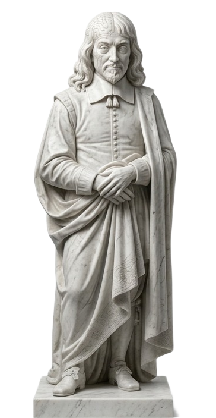
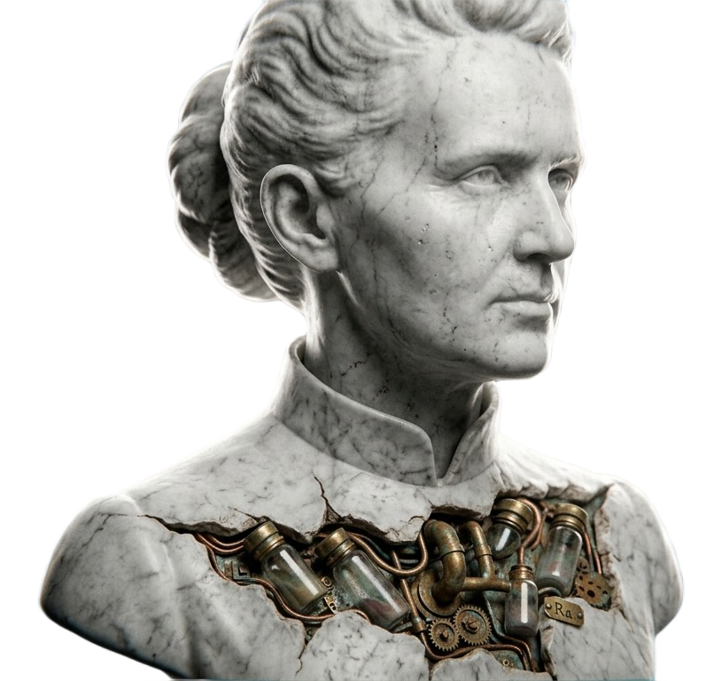

No separate menu. Studio clients get the same range of work as the main studio, the only difference is pace, discretion and who's in the room.

Statue asset 10Nothing here is outsourced or bolted on. Every discipline below is built by the same small team, so a site, its booking system and its automation all speak the same language from day one.
Custom built from a blank canvas. No page builders, no shared themes, no visible fingerprints from any other client.
App level experiences that install straight from the browser, no app store review, no download friction.
Storefronts designed around margin and repeat purchase, not just a working checkout button.
Till and order systems built to match how the floor actually runs, not a generic template forced onto it.
Calendars, deposits, waitlists and reminders that run without anyone chasing them.
Table to kitchen without a member of staff standing in between the two.
The repetitive admin work removed quietly, in the background, without changing how the team already operates.
Every tool already in use made to talk to each other, so nothing gets typed in twice.
One brief. One team.
Nothing handed off.
The same person who scopes the work is the person building it, from the first call to launch.
A direct conversation about what the business actually needs, not a sales deck.
A visual direction built for this brief only, reviewed with you before anything is coded.
Development in the open, with working previews as it comes together.
Live, monitored, and supported directly, not passed to a helpdesk.

Statue asset 11